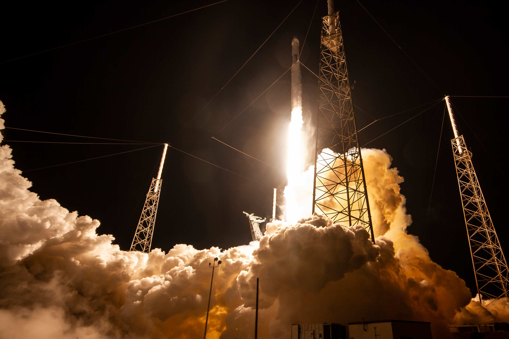
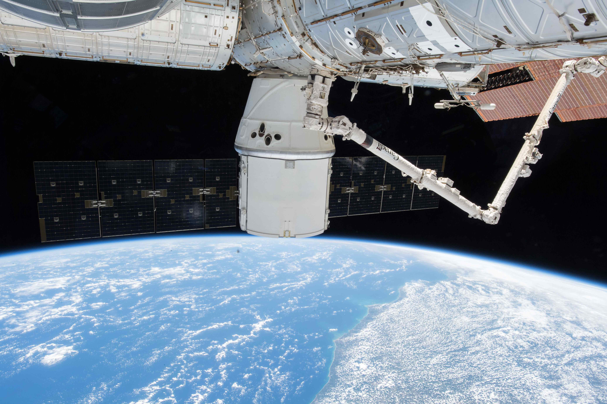

SpaceX
SpaceX designs, manufactures and launches advanced rockets and spacecraft. The company was founded in 2002 to revolutionize space technology, with the ultimate goal of enabling people to live on other planets.
CLICK HERE FOR ALL UPCOMING LAUNCHES REUSABILITY
SpaceX believes a fully and rapidly reusable rocket is the pivotal breakthrough needed to substantially reduce the cost of space access. The majority of the launch cost comes from building the rocket, which historically has flown only once.
Compare that to a commercial airliner – each new plane costs about the same as Falcon 9 but can fly multiple times per day and conduct tens of thousands of flights over its lifetime.
Following the commercial model, a rapidly reusable space launch vehicle could reduce the cost of traveling to space by a hundredfold. While most rockets are designed to burn up on reentry, SpaceX rockets can not only withstand reentry but can also successfully land back on Earth and refly again.
“You want to wake up in the morning and think the future is going to be great - and that’s what being a spacefaring civilization is all about. It’s about believing in the future and thinking that the future will be better than the past. And I can’t think of anything more exciting than going out there and being among the stars.” -Elon Musk